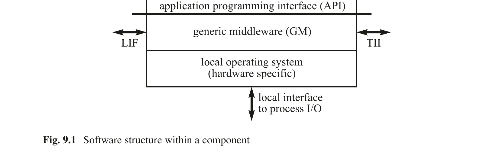
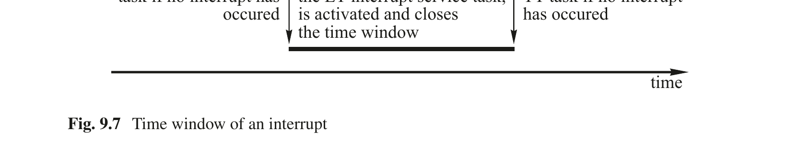
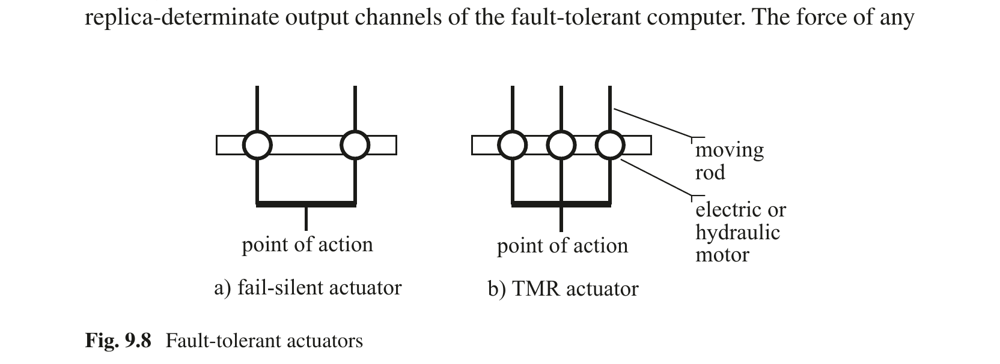
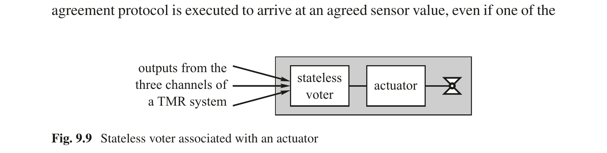
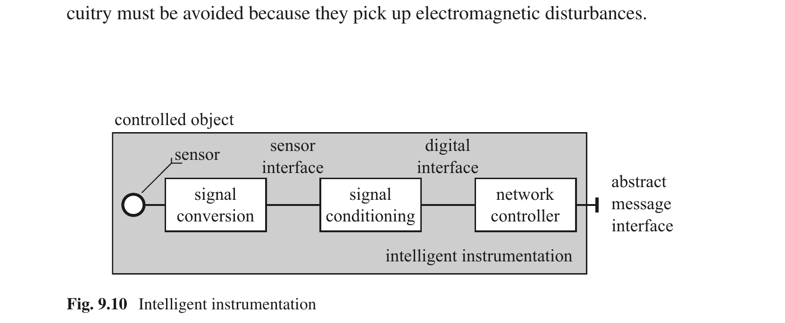

第9章 实时操作系统
Real-Time Systems — Hermann Kopetz & Wilfried Steiner 著 | AI 辅助翻译
本章概述
在基于组件的分布式实时系统中，我们区分两个层次的管理：组件之间基于消息的通信与资源分配的协调，以及对每个组件内部并发任务的建立、协调与控制。本章的重点是组件内部的操作系统与中间件功能。
如果软件核心映像不是永久驻留在组件中（例如，在只读存储器中），则必须提供通过技术无关接口对组件软件进行安全引导的机制。必须提供控制机制，以复位、启动和控制组件软件在运行时的执行。组件内的软件通常组织为一系列并发任务。必须仔细设计任务管理和组件间任务交互，以确保时间上的可预测性和确定性。在实时操作系统中，对时间及与时间相关信号的正确处理尤为重要。操作系统还必须支持程序员在运行时建立新的消息通信通道，并控制对组件基于消息的接口的访问。
领域特定的高层协议，例如简单的请求-回复协议，由一系列基于规则的消息交换组成，应在组件的中间件中实现。最后，操作系统必须提供访问连接组件到被控对象的本地进程输入/输出接口的机制。由于被控对象中 RT 实体（实时实体）的值域和时域是稠密的，而计算机内部值和时间的表示是离散的，因此计算机系统内部对值和时间的表示不可避免地存在一定的不准确性。为了减少这些表示不准确性的影响，并在计算机系统内部建立一个一致的（但并非完全忠实的）被控对象模型，必须在物理世界与网络空间之间的接口处执行一致性协议，以便在分布式计算机系统内部创建外部世界的一致数字映像。
组件内部的实时操作系统（OS）必须在时间上可预测。与个人计算机的操作系统不同，实时 OS 应为确定性的，并支持通过主动复制实现容错。在安全关键应用中，OS 必须经过认证。由于动态控制结构行为的认证是困难的，因此应尽可能避免使用动态机制。
9.1 组件间通信
组件与其环境（即其他组件和被控对象）的信息交换仅通过第 4.4 节中介绍的四个基于消息的接口实现。通用中间件和组件的操作系统负责管理对这四个消息接口的访问以实现组件间通信。TII、LIF 和 TDI 将在本节中讨论，而本地接口将在关于进程输入/输出的小节中讨论。
9.1.1 技术无关接口（TII）
从某种意义上说，TII 是一个元级接口，它使一个新组件从软件核心映像——即作业（job）——和给定的载体——即组件硬件——中诞生。TII 的目的是配置组件并控制组件内软件的执行。组件硬件必须提供一个专用的 TII 端口，用于将新的软件映像安全地下载到组件上。应定期在 TII 上发布组件的 g-state（参见第 4.2.3 节），以便通过专用的诊断组件检查 g-state 的内容。另一个直接连接到组件硬件的 TII 端口必须允许复位组件硬件，并在下一个重新集成点使用包含在复位消息中的相关 g-state 重新启动组件软件。TII 还用于控制组件硬件的电压和频率，前提是给定的硬件支持电压-频率缩放。由于恶意的 TII 消息有可能破坏组件的正确运行，因此必须确保发送到 TII 接口的所有消息的真实性和完整性。
9.1.2 链接接口（LIF）
组件的链接接口是在正常操作期间提供组件服务的接口。从操作和组件可组合性的角度来看，这是最重要的接口。LIF 已在第 4.6 节中广泛讨论。
9.1.3 技术相关接口（TDI）
在 VLSI 设计领域，提供一个专用的测试和调试接口端口是常见的做法，即已在 IEEE 标准 1149.1 中标准化的 JTAG 端口。这样的调试端口（TDI）支持对组件内部的详细观察，组件设计者需要用它来监视和更改在其他任何接口上不可见的组件内部变量。组件本地 OS 应支持这样的测试和调试接口。
9.1.4 通用中间件（GM）
组件内部的软件结构如图 9.1 所示。在本地硬件相关的实时操作系统与应用软件之间是通用中间件（GM）。到达 TII 的执行控制消息（例如，启动任务、终止任务，或复位组件硬件并使用相关的 g-state 重新启动组件）或在 TII 上产生的消息（例如，定期发布 g-state）在组件内部由标准化的通用中间件（GM）进行解释。应用软件用高级语言编写，通过 API 系统调用访问基于消息的操作接口（LIF 和本地接口）。GM 和任务本地操作系统必须管理 API 系统调用、到达 LIF 的消息以及通过 TII 消息到达的命令。虽然任务本地操作系统可能特定于给定的组件硬件，但 GM 层提供标准化的服务，处理标准化的系统控制消息，并实现高层协议。

图 9.1 组件内部的软件结构
9.2 任务管理
在我们的模型中，组件软件假定为一个设计单元，整个组件是最小的故障隔离单元。组件内的并发任务是协作性的而非竞争性的。由于整个组件是一个故障单元，因此设计和实现资源密集型机制来保护组件内部任务免受彼此影响是不合理的。因此，组件内部操作系统是一个轻量级的操作系统，用于管理组件内部的任务执行和资源分配。
任务是顺序程序的执行。它以读取输入数据及其内部状态开始，以产生结果和更新后的内部状态结束。在调用时没有内部状态的任务称为无状态任务；否则称为有状态任务。任务管理涉及任务的初始化、执行、监视、错误处理、交互和终止。
9.2.1 简单任务
如果任务内部没有同步点，我们称之为简单任务（S-task），即每当一个 S-task 被启动时，只要 CPU 分配给该任务，它就可以持续运行直到达到其终止点。由于 S-task 不能在任务体内部因等待 S-task 外部的事件而被阻塞，因此 S-task 的执行时间不直接依赖于节点中其他任务的进展，并且可以独立确定。然而，S-task 的执行时间可能因间接交互而延长，例如被更高优先级的任务抢占。
根据触发任务激活的信号，我们区分时间触发（TT）任务和事件触发（ET）任务。每个 TT 任务分配有一个周期（参见第 3.3.4 节），每当全局时间达到新周期的开始时，任务执行即开始。事件触发任务在任务的启动事件发生时启动。启动事件可以是另一个任务的完成，或者是通过传入消息或中断机制传递给操作系统的外部事件。
图 9.2 TT 操作系统中的任务描述符列表（TADL）
在完全时间触发的系统中，离线调度工具先验地建立所有任务的时间控制结构。这个时间控制结构编码在任务描述符列表（TADL）中，该列表包含节点所有活动的循环调度（图 9.2）。这个调度考虑了任务之间所需的优先关系和互斥关系，因此在运行时无需操作系统对任务进行显式协调来保证互斥。
每当时间达到 TADL 的一个入口点时，调度器被激活。它执行为该时刻计划的操作。如果启动了任务，操作系统会通知任务其激活时间，该时间在集群内是同步的。任务终止后，操作系统将任务的结果提供给其他任务使用。
TT 系统中 S-task 的应用程序接口（API）由三个数据结构和两个操作系统调用组成。数据结构是任务的输入数据结构、输出数据结构和 g-state 数据结构（如果任务是无状态的，则该结构为空）。系统调用是 TERMINATE TASK 和 ERROR。当任务达到其正常终止点时，任务执行 TERMINATE TASK 系统调用。如果发生无法在应用任务内处理的错误，任务以 ERROR 系统调用终止其操作。
在事件触发系统中，不断变化的应用场景动态地确定任务执行的顺序。每当发生重要事件时，一个任务被释放到就绪状态，并调用动态任务调度器。由调度器在运行时决定选择哪一个就绪任务由 CPU 进行下一次服务。解决调度问题的不同动态算法将在下一章中讨论。调度器的 WCET（最坏情况执行时间）贡献了操作系统的 WCAO（最坏情况管理开销）。
导致 ET 任务激活的重要事件可以是：
(i) 来自节点环境的事件，即消息的到达或来自被控对象的中断，或
(ii) 组件内部的重要事件，即任务的终止或当前执行任务内的其他条件，或
(iii) 时钟推进到指定的时刻。这个时刻可以静态或动态指定。
支持非抢占式 S-task 的 ET 操作系统将在当前运行的任务终止后做出新的调度决策。这简化了操作系统的任务管理，但严重限制了其响应能力。如果一个重要事件恰好在最长任务被调度后立即到达，那么在该最长任务完成之前，这个事件都不会被考虑。
在支持任务抢占的 RT 操作系统中，每次重要事件的发生都可能激活一个新任务，并导致当前执行任务的立即中断。根据动态调度算法的结果，新任务将被选中执行，或者被中断的任务将继续执行。如果在任务调用时将任务所需的所有输入数据从全局数据区复制到任务的私有数据区，则可以避免并发执行的 S-task 之间的数据冲突。如果组件被复制，必须注意确保所有副本上的抢占点位于同一条语句；否则副本确定性可能会丢失。
支持事件触发 S-task 的操作系统 API 比仅支持时间触发任务的操作系统需要更多的系统调用。除了数据结构以及已经介绍的 TT 系统的系统调用外，操作系统还必须提供系统调用来立即或在将来某个时间点 ACTIVATE（使就绪）一个新任务。还需要另一个系统调用来 DEACTIVATE 一个已经激活的任务。
9.2.2 触发任务
在 TT 系统中，控制始终保持在计算机系统内部。为了识别计算机外部的重大状态变化，TT 系统必须定期监视环境的状态。触发任务是时间触发的 S-task，它在一组反映环境当前状态的时间精确状态变量上评估一个触发条件。触发任务的结果可以是一个控制信号，用于激活另一个应用任务。由于外部或内部状态是以触发任务的频率进行采样的，因此只有持续时间长于触发任务采样周期的状态才能保证被观察到。短时状态，例如按钮的按下，必须存储在内存元素（例如，接口中）中，其持续时间应长于触发任务的采样周期。周期性触发任务在 TT 系统中产生管理开销。触发任务的周期必须小于由环境中事件激活的 RT 事务的松弛度（即截止时间与执行时间之差）。如果 RT 事务的松弛度非常小（<1 ms），则与触发任务相关的开销可能变得不可接受，此时需要实现中断。
9.2.3 复杂任务
如果一个任务在任务体内包含一个阻塞的同步语句（例如，信号量等待操作），则该任务称为复杂任务（C-Task）。这种等待操作可能是因为任务必须等待任务外部的某个条件得到满足，例如，直到另一个任务完成对共享数据结构的更新，或直到来自终端的输入到达。如果一个共享数据结构被实现为受保护的共享对象，则在任何特定时刻只有一个任务可以更新该数据（互斥）。所有其他任务必须通过等待操作被延迟，直到当前活跃的任务完成其临界区。因此，节点中复杂任务的最坏情况执行时间是一个全局问题，因为它直接依赖于节点内或节点环境中其他任务的进展。
C-task 的 WCET 不能独立于节点中的其他任务来确定。它可能取决于节点环境中某个事件的发生，如等待输入消息的例子所示。时序分析不再是单个任务的局部问题；它变成了一个全局系统问题。仅通过分析任务代码本身，不可能给出 C-task WCET 的上界。
C-task 的应用程序接口比 S-task 更复杂。除了已经介绍的三个数据结构（即输入数据结构、输出数据结构和 g-state 数据结构）之外，还必须定义在阻塞点访问的全局数据结构。必须提供处理 WAIT-FOR-EVENT 和 SIGNAL-EVENT 的系统调用。执行 WAIT-FOR-EVENT 后，任务进入阻塞状态并在队列中等待。事件发生将任务从阻塞状态释放。必须通过超时任务进行监视，以避免永久阻塞。如果在超时期限内等待的事件发生了，超时任务必须被停用，否则必须终止被阻塞的任务。
9.3 时间的双重角色
实时映像在使用时刻必须具有时间准确性（参见第 5.4 节）。在分布式系统中，只有在传感器节点观察 RT 实体的时刻与执行器节点确定的使用时刻之间的持续时间可以被测量时，才能检查时间准确性。这要求所有参与的节点之间有一个具有适当精度的全局时间基准。如果需要容错，则必须提供两个独立的自检通道，将终端系统连接到容错通信基础设施。时钟同步消息必须在两个通道上都提供，以容忍任一通道的丢失。
每个 I/O 信号有两个维度：值维度和时间维度。值维度涉及 I/O 信号的值。时间维度涉及值从环境中捕获或释放到环境中的时刻。
发生在实时计算机环境中的事件可以从两个不同的时序角度来看：
(i) 它定义了在时间域中 RT 实体值变化的时刻。对该时刻的精确了解是后续分析事件后果的重要输入（时间作为数据）。
(ii) 它可能要求计算机系统立即采取行动，以尽快对该事件做出反应（时间作为控制）。
区分时间的这两种不同角色很重要。在大多数情况下，将时间作为数据处理就足够了，只有在少数情况下才需要计算机系统立即采取行动（时间作为控制）。
9.3.1 时间作为数据
如果分布式系统中有一个精度已知的全局时间基准，那么将时间作为数据的实现是简单的。观察组件必须在观察消息中包含事件发生的时间戳。我们称包含事件时间戳的消息为"定时消息"。定时消息可以在稍后处理，不需要对时间控制结构进行任何动态的、数据依赖的修改。或者，如果使用延迟已知且固定的现场总线通信协议，则消息到达时间减去这个已知延迟可以用于确定消息的发送时间。
同样的定时消息技术也可以用于输出侧。如果一个输出信号必须以远小于输出消息抖动的精度在精确时刻施加到环境上，则可以向控制执行器的节点发送一条定时输出消息。该节点解释消息中的时间，并在预定的精确时刻作用于环境。
在以先验已知的时刻并以固定周期交换消息的 TT 系统中，定时消息中的时间表示可以利用这些先验信息。时间值可以编码为消息周期的分数，从而提高数据效率。例如，如果每 100 ms 交换一次观察消息，则相对于周期开始时间的 7 位时间表示将以优于 1 ms 的粒度标识事件。这样一个 7 位的时间表示，加上一个额外的位来表示事件发生，可以打包为一个单字节。这种对事件发生时刻的紧凑表示在报警监视系统中非常有用，其中有数千个报警需要由周期性触发任务定期查询。触发任务的周期决定了报警报告的最大延迟（时间作为控制），而时间戳的分辨率则提供了关于报警事件在上一周期中发生的精确时刻（时间作为数据）的信息。
9.3.2 时间作为控制
时间作为控制比时间作为数据更难处理，因为它有时可能需要动态的、数据依赖的时间控制结构修改。谨慎地仔细检查应用需求，以识别那些绝对需要动态重调度任务的情况是明智的。
如果一个事件需要立即行动，消息传输的最坏情况延迟是一个关键参数。在事件触发协议（如 CAN）中，消息优先级用于解决因几乎同时发生的事件而产生的对公共总线的访问冲突。特定消息的最坏情况延迟可以通过考虑消息系统的峰值负载激活模式来计算 [Tin95]。
9.4 任务间交互
任务间交互是组件内部并发执行的任务之间交换数据以实现共同目标所必需的。在一组并发执行的任务之间交换数据有两种主要方式：(i) 通过消息交换和 (ii) 通过提供可被多个任务访问的共享数据区域。
在组件内部，共享数据结构被广泛使用，因为这种形式的任务间交互可以在任务协作的单个组件中高效实现。然而，必须注意维护被多个任务并发读取或写入的数据的完整性。图 9.3 描述了这个问题。两个任务 T1 和 T2 访问同一个数据的临界区域。我们将程序执行过程中访问数据临界区域的时间间隔称为任务的临界区。如果任务的临界区重叠，就可能发生问题。如果一个任务读取共享数据而同时另一个任务正在修改该数据，那么读者可能读到不一致的数据。如果两个或更多写入任务的临界区重叠，数据可能会被破坏。
图 9.3 临界任务区与临界数据区
可以应用以下三种技术来解决这个问题：
(i) 协调的静态调度。
(ii) 非阻塞写协议。
(iii) 信号量操作。
9.4.1 协调的静态调度
在时间触发系统中，可以构造任务调度使得任务的临界区不重叠。这是一种解决问题的非常有效的方式，因为：
(i) 保证互斥的开销最小且可预测。
(ii) 解决方案是确定性的。
只要可能，就应该选择这种解决方案。
9.4.2 非阻塞写（NBW）协议
然而，如果具有临界区的任务是事件触发的，我们就无法先验地设计无冲突的协调任务调度。非阻塞写（NBW）协议是一个无锁实时协议的示例 [Kop93a]，它在只有一个任务向数据临界区写入时，确保一个或多个读者的数据完整性。
让我们分析 NBW 在从通信系统到主机的接口上进行数据传输的操作。在这个接口处，有一个写者（通信系统）和多个读者（组件的任务）。读者不会破坏写者写入的信息，但写者可能干扰读者的操作。在 NBW 协议中，实时写者永远不会被阻塞。因此，每当有新的消息到达时，它就会将消息的新版本写入数据临界区。如果读者在写者正在写入新版本时读取消息，检索到的消息将包含不一致的信息，必须被丢弃。如果读者能够检测到干扰，那么读者可以重试读操作，直到检索到一致版本的数据。必须证明读者执行的重试次数是有界的。
该协议要求每个数据临界区有一个并发控制字段 CCF。硬件必须保证对 CCF 的原子访问。并发控制字段初始化为零，写者在写操作开始之前递增它。在写操作完成后，写者再次递增它。读者在读操作开始时读取 CCF。如果 CCF 是奇数，则读者立即重试，因为有一个写操作正在进行中。在读操作结束时，读者检查写者在读操作期间是否更改了 CCF。如果是，则再次重试读操作，直到可以读取到未损坏版本的数据结构（参见图 9.4）。
图 9.4 非阻塞写（NBW）协议
可以证明，如果写操作之间的时间间隔显著长于写操作或读操作的持续时间，则读重试次数存在上界。由读者重试引起的典型实时任务执行时间的最坏情况扩展仅为原始最坏情况执行时间（WCET）的百分之几 [Kop93a]。
无锁同步已在其他实时系统中实现，例如在多媒体系统中 [And95]。已经表明，采用无锁同步的系统比锁定数据的系统获得更好的性能。
9.4.3 信号量操作
避免数据不一致的经典机制是通过在保护资源的信号量变量上执行 WAIT 操作，强制实现对临界任务区的互斥执行。每当一个任务处于其临界区时，其他任务必须在队列中等待，直到临界区被释放（显式同步）。
信号量初始化操作的实现代价高昂，无论是在内存需求还是操作系统处理开销方面。如果一个进程遇到阻塞的信号量，必须进行上下文切换。该进程被放入队列，并延迟直到另一个进程完成其临界区。然后，该进程出队，并进行另一次上下文切换以恢复原始上下文。如果临界区非常小（这在许多实时应用中很常见），信号量操作的处理时间可能远长于实际读取或写入公共数据的时间。
NBW 协议和信号量操作都可能导致副本确定性的丧失。对 CCF 或信号量变量的并发访问会导致竞态条件，该条件在副本中以不可预测的方式解决。
9.5 进程输入/输出
传感器是一个在被控对象（物理世界）与计算机（网络世界）之间形成接口的装置。在输入侧，传感器将机械或电气量转换为数字形式，如果物理量的域是稠密的，则数字表示的离散性会导致不可避免的误差。任何模拟量数字表示的最后一位（无论在值域还是时域）都是不可预测的，如果同一量由两个独立的传感器观察，将导致网络世界表示中可能存在不一致。在输出侧，数字值由执行器转换为适当的物理信号。
9.5.1 模拟输入/输出
在第一步中，许多模拟物理量的传感器产生标准的 4–20 mA 范围内的模拟信号（4 mA 表示值范围的 0%，20 mA 表示值范围的 100%），然后通过模数（AD）转换器将其转换为数字形式。如果测量值编码在 4–20 mA 范围内，则可以区分断线（无电流流动，0 mA）和 0% 的测量值（4 mA）。
在没有特殊措施的情况下，电噪声水平将任何模拟控制信号的精度限制在约 0.1%。分辨率超过 10 位的模数（AD）转换器需要一个精心控制的物理环境，这在典型的工业应用中是无法提供的。因此，16 位字长足以编码模拟传感器测量的 RT 实体的值。
RT 实体中某个值的发生时刻与该值由传感器在传感器/计算机接口处呈现的时刻之间的时间间隔，取决于特定传感器的传递函数。传感器的阶跃响应（参见图 1.4）给出了该传递函数的近似值，表示传感器的滞后时间和上升时间。在推理传感器/执行器信号的时间准确性时，必须考虑传感器和执行器传递函数的参数（图 9.5）。它们减少了 RT 实体中某个值发生时刻与计算机将该值用于输出动作的时刻之间的可用时间间隔。滞后时间短的传感器增加了计算机系统可用的时间准确性间隔的长度。
在许多控制应用中，模拟物理量被观察（采样）的时刻处于计算机系统的控制范围内。为了减少控制回路的死区时间，采样时刻、采样数据到控制节点的传输、以及设定值数据到执行器节点的传输应在时间触发系统中进行相位对齐（参见第 3.3.4 节）。
图 9.5 完整 I/O 事务的时间延迟
9.5.2 数字输入/输出
数字 I/O 信号在 TRUE 和 FALSE 两种状态之间转换。在许多应用中，两次状态变化之间的时间间隔长度具有语义意义。在其他应用中，转换发生的时刻很重要。
如果输入信号来自简单的机械开关，新的稳定状态不会立即达到，而是经过一系列随机振荡（图 9.6）之后才能达到，这种振荡称为触点弹跳，由开关触点的机械振动引起。这种触点弹跳必须通过模拟低通滤波器，或者更常见地，在计算机系统内部由软件任务（例如，消抖例程）来消除。由于微控制器价格低廉，通过软件技术消抖比通过硬件机制（例如低通滤波器）更便宜。
图 9.6 机械开关的触点弹跳
许多传感器设备产生一系列脉冲输入，每个脉冲携带关于事件发生的信息。例如，距离测量通常通过一个沿待测物体滚动的轮子来完成。轮子的每次旋转产生一定数量的脉冲，这些脉冲可以转换为行进的距离。脉冲的频率表示速度。如果轮子经过一个定义的校准点，则向计算机发送一个额外的数字输入信号，将脉冲计数器设置为定义的值。一个良好的实践是尽快将相对事件值转换为绝对状态值。
时间编码信号 许多输出设备，例如功率半导体（如 IGBT（绝缘栅双极晶体管）），由具有良好指定形状的脉冲序列控制（脉冲宽度调制—PWM）。许多专为 I/O 设计的微控制器为生成这些数字脉冲形状提供特殊的硬件支持。
9.5.3 中断
中断机制使计算机控制范围之外的设备能够控制计算机内部的时间控制模式。这是一种强大且潜在危险的机制，必须非常谨慎地使用。当外部事件需要计算机的反应时间（时间作为控制），而该反应时间无法通过触发任务高效实现时，才需要中断。
触发任务最多将由外部事件启动的 RT 事务的响应时间延长一个触发任务周期。提高触发任务频率可以减少这种额外的延迟，但代价是增加开销。[Pol95b] 分析了在所需响应时间接近触发任务 WCET 时，周期性执行触发任务的开销增加情况。作为经验法则，只有当所需响应时间小于触发任务 WCET 的十倍时，才应考虑实现中断。
如果需要知道消息到达的精确时刻，但不需要立即采取行动，则应使用在硬件中实现的中断控制的时间戳机制。这种机制自主工作，不会干扰操作系统级别的任务控制结构。
在中断驱动的软件系统中，中断线上的瞬时错误可能破坏整个节点的时间控制模式，并可能导致违反重要的截止时间。因此，必须连续监视任意两次中断发生之间的时间间隔，并与规定的中断事件之间的最小持续时间进行比较。
监视中断的发生 对于每个被监视的中断，计算机中有三个任务与之相关 [Pol95b]（图 9.7）。第一个和第二个任务是动态规划的 TT 任务，用于确定中断窗口。第一个任务启用中断线，从而打开允许中断发生的时间窗口。第三个任务是由中断激活的中断服务任务。当中断发生时，中断服务任务通过禁用中断线来关闭时间窗口。然后，它停用已调度的第二个任务的未来激活。如果第三个任务在第二个任务开始之前没有被激活，则第二个任务（一个在时间窗口结束时调度的动态 TT 任务）通过禁用中断线来关闭时间窗口。第二个任务然后生成一个错误标志，通知应用程序中断缺失。
这两个时间触发任务是错误检测所必需的。第一个任务检测不应发生的偶发中断。第二个任务检测本应发生但缺失的中断。这些不同的错误需要不同类型的错误处理。我们对被控对象的规律性了解越多，就越能使中断可能发生的时间窗口变小。这导致更好的错误检测覆盖率。

图 9.7 中断的时间窗口
9.5.4 容错执行器
执行器必须将计算机输出接口处产生的信号转换为被控对象中的某种物理动作（例如，打开阀门）。执行器构成从感知 RT 实体值到在环境中实现预期效果的链条中的最后一个元素。在容错系统中，执行器必须对在复制通道上接收到的输出信号执行最终投票。图 9.8 显示了一个示例，其中环境中的预期动作是定位一个机械杠杆。杠杆末端可能有任何作用在被控对象上的机械设备，例如，在作用点处可能安装有控制阀的活塞。
在副本确定性的架构中，正确的复制通道在值域和时域上产生相同的结果。我们区分以下两种情况：架构支持故障静默属性（图 9.8a），即所有故障通道都是静默的；以及不支持故障静默属性（图 9.8b），即故障通道可能在值域上表现出任意行为。

图 9.8 容错执行器
故障静默执行器 在故障静默架构中，所有子系统必须支持故障静默属性。故障静默执行器要么产生预期的（正确的）输出动作，要么完全不产生任何结果。如果故障静默执行器未能产生输出动作，它不得妨碍复制的故障静默执行器的工作。图 9.8a 的故障静默执行器由两个电机组成，每个电机都有足够的功率来移动作用点。每个电机连接到计算机系统的两个副本确定性输出通道之一。如果一个电机在任何位置发生故障，另一个电机仍然能够将作用点移动到所需位置。
三模冗余执行器 三模冗余（TMR）执行器（图 9.8b）由三个电机组成，每个电机连接到容错计算机的三个副本确定性输出通道之一。任意两个电机的合力必须足够强大以压倒第三个电机的力；然而，任何单个电机的力量可能不足以压倒其他两个电机。TMR 执行器可以看作一个机械投票器，它将作用点放置在由三个通道的多数决定的某个位置，将不一致的通道投票出局。
带专用无状态投票器的执行器 在许多冗余执行器已经就位的应用中，可以通过将物理执行器与一个小型微控制器结合来构建一个投票执行器，该微控制器接受三模冗余系统三个通道的三个输入通道，并对从三个通道接收到的消息进行投票。这个投票器可以是无状态的，即在每个周期之后，投票器的电路被复位，以消除由瞬时故障引起的状态错误累积（图 9.9）。

图 9.9 与执行器关联的无状态投票器
9.5.5 智能仪器化
越来越有一种趋势是将传感器/执行器及其相关的微控制器封装在一个单一的物理外壳中，向外提供一个标准的抽象消息接口，在现场总线（例如 CAN 总线）上产生测量值（图 9.10）。这样的单元称为智能仪器。

图 9.10 智能仪器化
智能仪器隐藏了具体的传感器接口。其单芯片微控制器为传感器/执行器提供所需的控制信号，执行信号调理、信号平滑和本地错误检测，并以标准测量单位通过现场总线消息接口呈现/获取有意义的 RT 映像。智能仪器简化了工厂设备与计算机的连接。
为了使测量值具备容错能力，可以将多个独立传感器封装在一个单一的智能仪器中。在智能仪器内部，执行一致性协议以达成一致的传感器值，即使其中一个传感器已经发生故障。这种方法假设可以在接近的空间范围内进行独立的测量。
将现场总线节点与执行器集成，就产生了一个智能执行器设备。
由于今天有多种不同的现场总线设计可用，但没有一个被普遍接受的行业范围现场总线标准出现，传感器制造商必须应对为不同现场总线提供不同智能仪器网络接口的困境。
9.5.6 物理安装
本书的范围之外是传感器基实时控制系统的物理安装中必须考虑的所有问题。这些复杂的话题可以在关于计算机硬件安装的书籍中找到。然而，这里着重强调几个关键问题。
电源 许多计算机故障是由电源故障引起的，即长时间的电源中断、不到一秒钟的短暂电源中断（也称为电压骤降），以及电压浪涌（短暂的过电压）。因此，提供可靠且干净的电源对任何计算机系统的正常运行至关重要。
接地 在工业厂房中设计适当的接地系统是一项需要相当经验的主要任务。许多短暂的计算机硬件故障是由存在缺陷的接地系统引起的。以树状方式将所有单元连接到一个高质量的真实接地点是很重要的。接地电路中的环路必须避免，因为它们会接收电磁干扰。
电隔离 在许多应用中，需要将计算机终端与工厂中的信号完全电隔离。这种隔离可以通过用于数字信号的光耦合器或用于模拟信号的信号变压器来实现。
9.6 一致性协议
传感器和执行器的故障率远高于单芯片微型计算机。任何关键的输出动作都不应依赖单一传感器的输入。需要通过多个不同的传感器来观察被控对象，并将这些观察结果关联起来，以检测错误的传感器值、观察执行器的效果，并获得被控对象物理状态的一致映像。在分布式系统中，一致性（在 [Bar93] 中也称为共识）通常需要在参与一致性的各方之间进行信息交换。然而，通过适当的系统架构也可以避免一些信息交换。
一般来说，所需的交换轮次（或阶段）数取决于一致性的类型以及对参与者可能故障模式的假设。
9.6.1 原始数据、测量数据与一致数据
在第 1.2.1 节中，介绍了原始数据、测量数据和一致数据的概念：原始数据在物理传感器的数字硬件接口处产生。测量数据以标准工程单位表示，通过信号调理过程从一个或一系列原始数据样本中导出。被判定为 RT 实体正确映像的测量数据（例如，与通过不同技术导出的其他测量数据元素比较后），称为一致数据。一致数据构成控制动作的输入。
在安全关键系统中，不允许存在任何单点故障，一致数据元素不得源自单一传感器。开发安全关键输入系统的挑战在于冗余传感器的选择和放置，以及一致性算法的设计。我们区分两种类型的一致性：语法一致性和语义一致性。
9.6.2 语法一致性
假设两个独立的传感器测量同一个 RT 实体。当两个观察结果从模拟值域转换到离散值域时，由测量误差和数字化误差引起的两个原始值之间的微小差异是不可避免的。这些不同的原始数据值将导致不同的测量值。当被控对象中事件的发生时间被映射到计算机的离散时间时，时域中也会发生数字化误差。即使在无故障的情况下，这些不同的测量值也必须以某种方式调和，以便向可能复制的控制任务呈现 RT 实体的一致视图。在语法一致性中，一致性算法计算一致值时不考虑测量值的上下文。例如，一致性算法总是取一组测量数据值的平均值。如果必须容忍一个传感器的拜占庭故障，则需要三个额外的传感器（参见第 6.4.2 节）。
9.6.3 语义一致性
如果不同测量值的含义通过基于关于被控对象过程参数之间关系和物理特性的先验知识的过程模型相互关联，我们称之为语义一致性。在语义一致性中，不需要复制或三倍复制每个传感器。不同的冗余传感器观察不同的 RT 实体。物理过程模型将这些冗余传感器读数相互关联，以找到一组合理的一致值，并识别表示传感器故障的不合理值。这样的错误传感器值必须基于测量集中固有的语义冗余，由给定时间点的最可能值的计算估计值来替换。
语义一致性需要对应用过程技术有基本的理解。通常，由一个由过程工艺师、测量专家和计算机工程师组成的跨学科团队合作，找出可以以合理成本高精度测量的 RT 实体。通常，对于每一个输出值，大约需要观察三到七个输入值，这不仅是为了诊断错误的测量数据元素，也是为了检查执行器的正常运行。观察执行器预期效果的独立传感器（参见第 7.2.5.1 节）必须监视每个执行器的正常运行。
在工程实践中，测量数据值的语义一致性比语法一致性更为重要。一致性阶段的结果是产生一致（且一致）的数字输入值集。这些在值域和时域中定义的一致值随后被所有（复制的）任务使用，以实现控制系统的副本确定性行为。
9.7 错误检测
实时操作系统必须通过通用方法支持时域错误检测和值域错误检测。本节描述了一些通用方法。
9.7.1 监视任务执行时间
在软件开发过程中，必须为实时任务建立最坏情况执行时间（WCET）的紧上界（参见第 10.2 节）。操作系统必须在运行时监视此 WCET，以检测瞬时或永久的硬件错误。如果任务在其 WCET 内没有终止其操作，操作系统将终止该任务的执行。由应用程序来指定在发生错误时应采取什么行动。
9.7.2 监视中断
错误的外部中断有可能破坏节点内实时软件的时间控制结构。在设计时，必须知道中断的最小到达间隔时间，以便估计软件系统必须处理的峰值负载。在运行时，操作系统必须通过禁用中断线来强制执行这个最小到达间隔时间，以减少错误偶发中断的概率（参见第 9.5.3 节）。
9.7.3 任务的双重执行
故障注入实验表明，任务的双重执行及其结果的后续比较是检测导致值域未检测错误（无声错误）的瞬时硬件故障的一种非常有效的方法 [Arl03]。
操作系统可以为应用任务的双重执行提供执行环境，而无需对应用任务本身进行任何更改。因此，可以在系统配置时决定哪些任务应该执行两次，哪些任务仅依赖单次执行就够了。
9.7.4 看门狗
故障静默节点要么产生正确的结果，要么完全不产生任何结果。故障静默节点的故障只能在时域中检测到。一个标准技术是提供看门狗信号（心跳），该信号必须由节点的操作系统定期产生。如果节点有权访问全局时间，则看门狗信号应在已知的绝对时间点定期产生。外部观察者可以在看门狗信号消失时立即检测到节点的故障。
一种更复杂的错误检测机制——也覆盖了部分值域——是节点定期执行挑战-响应协议。外部错误检测器向节点提供一个输入模式，并期望在指定的时间间隔内得到一个定义的响应模式。这个响应模式的计算应尽可能多地涉及节点的功能单元。如果计算出的响应模式偏离了先验已知的正确结果，则检测到节点错误。
要点回顾
- 我们在基于组件的分布式实时系统中区分两个层次的管理：(i) 组件之间基于消息的通信与资源分配的协调，(ii) 每个组件内部并发任务的建立、协调与控制。
- 由于组件软件假定为一个设计单元，整个组件是最小的故障隔离单元，因此组件内部的并发任务是协作性的而非竞争性的。
- 在完全时间触发的系统中，所有任务的静态时间控制结构由离线调度工具先验建立。这个时间控制结构编码在任务描述符列表（TADL）中，该列表包含节点所有活动的循环调度。此调度考虑了任务之间所需的优先关系和互斥关系，因此在运行时无需操作系统的显式协调。
- 在支持任务抢占的 RT 操作系统中，每次重要事件的发生都可能激活一个新任务，并导致当前执行任务的立即中断。如果组件被复制，必须注意确保所有副本上的抢占点位于同一条语句；否则副本确定性可能会丢失。
- C-task 的时序分析不再是单个任务的局部问题；它变成了一个全局系统问题。在一般情况下，不可能给出 C-task WCET 的上界。
- 区分时间作为数据和时间作为控制非常重要。时间作为控制比时间作为数据更难处理，因为它有时可能需要动态的、数据依赖的时间控制结构修改。
- 必须注意维护被多个任务并发读取或写入的数据的完整性。在时间触发系统中，可以构造任务调度使得任务的临界区不重叠。
- 为了减少控制回路的死区时间，采样时刻、采样数据到控制节点的传输、以及设定值数据到执行器节点的传输应在时间触发系统中进行相位对齐。
- 在中断驱动的软件系统中，中断线上的瞬时错误可能破坏整个节点的时间控制模式，并可能导致违反重要的截止时间。
- 投票执行器可以通过将一个小型微控制器分配给物理执行器来构建，该微控制器接受三模冗余系统三个通道的三个输入通道，并对从三个通道接收到的消息进行投票。
- 通常，对于每一个输出值，大约需要观察三到七个输入值，这不仅是为了诊断错误的测量数据元素，也是为了检查执行器的正常运行。
参考文献
许多标准操作系统教科书中包含实时操作系统的章节，例如 Stallings 的教科书 [Sta18]。ARINC 653 标准用于安全关键航空电子系统中的操作系统。AUTOSAR 是面向汽车应用的操作系统，包括安全关键的应用。一些商业上 POSIX™ 认证或基本符合 POSIX™ 的实时操作系统被用于安全关键系统。开源操作系统 Linux 也基本符合 POSIX™。目前正在进行朝向安全关键 Linux 的努力 [All21]。然而，由于其软件复杂性，这些努力是否能在未来取得成功尚不清楚。另一方面，多种基于 Linux 的操作系统被用于非安全关键的软实时系统。关于实时操作系统的最新研究贡献可以在 IEEE 实时系统年会论文集和 Springer Verlag 的《实时系统》期刊中找到。
复习题与问题
- 解释标准个人计算机操作系统与安全关键实时应用中节点内的 RT 操作系统之间的区别！
- 简单任务、触发任务和复杂任务分别是什么意思？
- 时间作为数据与时间作为控制的区别是什么？
- 为什么经典的信号量操作机制对于实时 OS 中保护临界数据是次优的？有哪些替代方案？
- 触点弹跳是如何消除的？
- 我们什么时候需要中断？偶发中断的影响是什么？我们如何保护软件免受偶发中断的影响？
- 报警监视系统的一个节点必须监视 50 个报警。报警必须通过 100 kbit/s 的 CAN 总线在 10 ms 内报告给集群的其余部分。勾画一个使用周期性 CAN 消息（时间触发，周期为 10 ms）的实现方案，以及一个使用偶发事件触发消息（每个发生的报警一条）的实现方案。从以下角度比较这两种实现方案：无报警和所有报警同时发生条件下产生的负载、保证的响应时间，以及报警节点崩溃故障的检测。
- 假设一个执行器的故障率为 10^6 FIT。如果我们通过向该执行器添加一个故障率为 10^4 FIT 的微控制器来构建投票执行器，那么投票执行器的综合故障率是多少？
- 原始数据、测量数据和一致数据之间的区别是什么？
- 语法一致性和语义一致性之间的区别是什么？哪种技术在实时应用设计中更为重要？
- 列出实时 OS 应支持的一些通用错误检测技术！
- 通过任务的双重执行可以检测到哪些类型的故障？